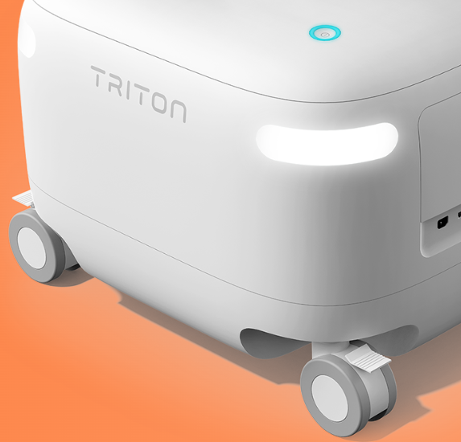
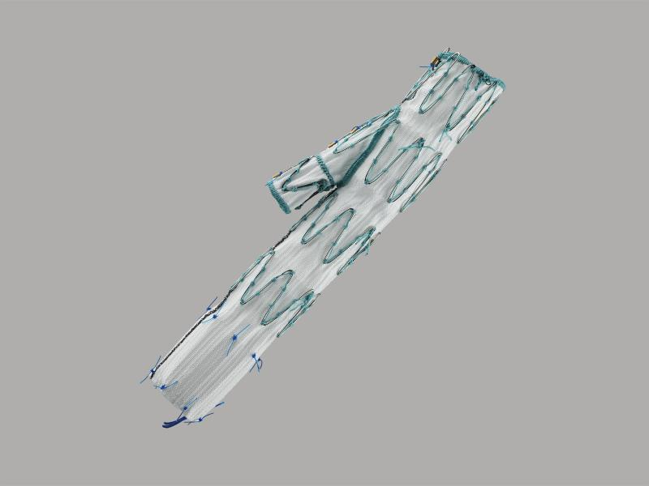
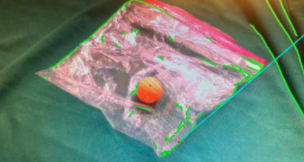

I build robots that make the world a better place.
I'm Anuj. I make hardware, software, and everything in between.
I'm currently at Neptune Medical, building mechanical systems for a first-in-class flexible robotic platform that goes further into anatomy than any robot ever has.
Before that, I worked at Medtronic, building motorized surgical stapling instruments and stents for aneurysms. Prior to that, I was at ProteinSimple, designing electromechanical hardware for protein analysis.
I studied Bioengineering at UC Berkeley with a minor in Electrical Engineering and Computer Science, concentrating in robotics.
I live in San Francisco and spend my time learning, building, and exploring new ideas. I care about applications of AI to the physical world, venture capital, and making things that solve real problems.
I write about AI, venture capital, and anything else that interests me at Cyclicality.
I'm always looking for opportunities to meet people, have good conversations, and learn new things. Reach out if you'd like to chat!
Selected work

Robotic Colonoscopy Platform
Mechanical design, tendon-driven actuation, soft robotics, and system integration

Stents and Staplers
Stent design optimization, Motor-current sensing, signal processing, and testing

Vision and Control for Grasping
Perception and closed-loop control for transparent deformable objects

Sound-Reactive Laser Light Show
Electricomechanical systems, state machines, and Design